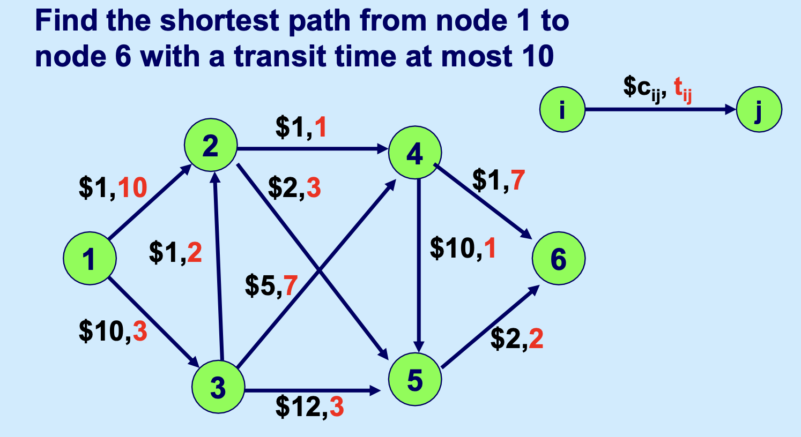
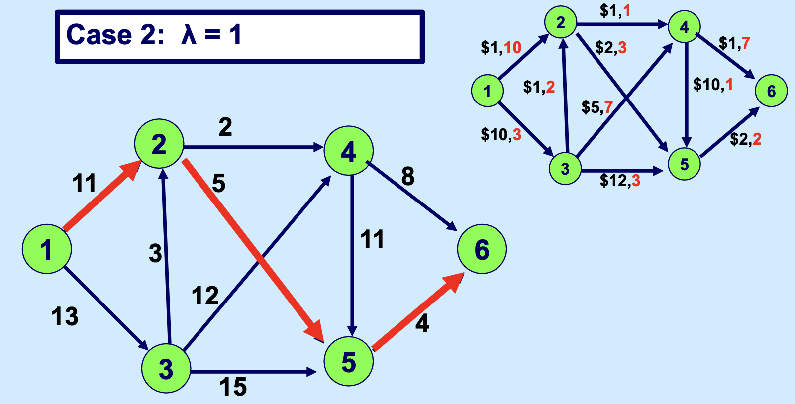
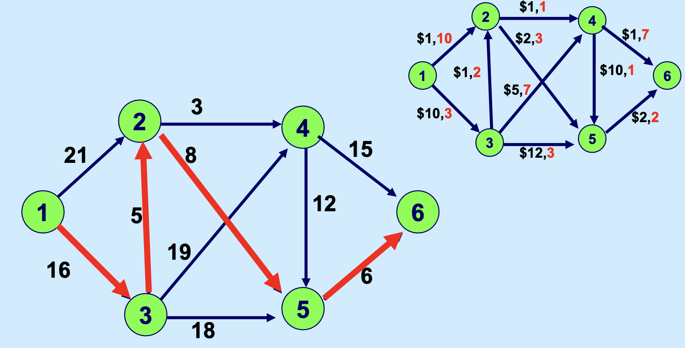
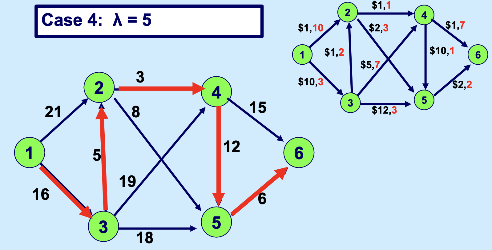
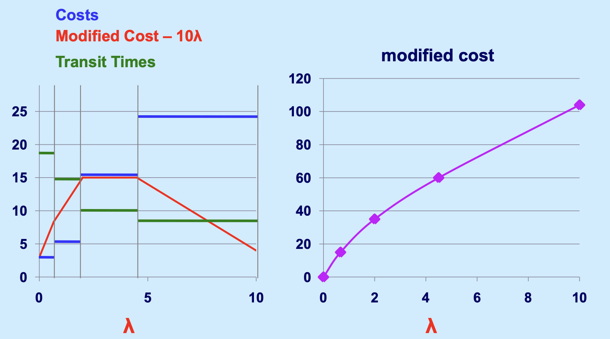
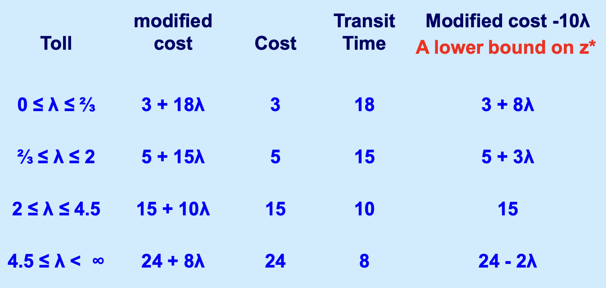
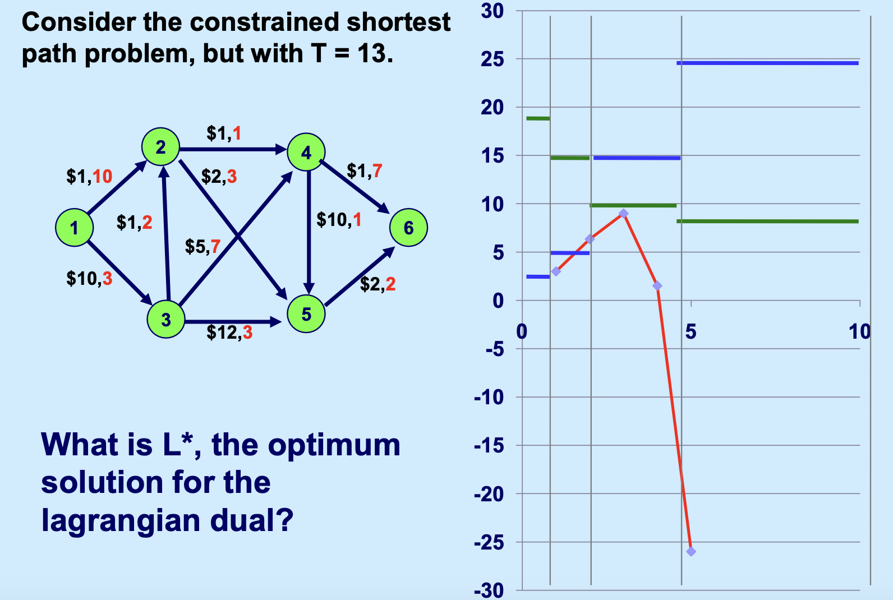
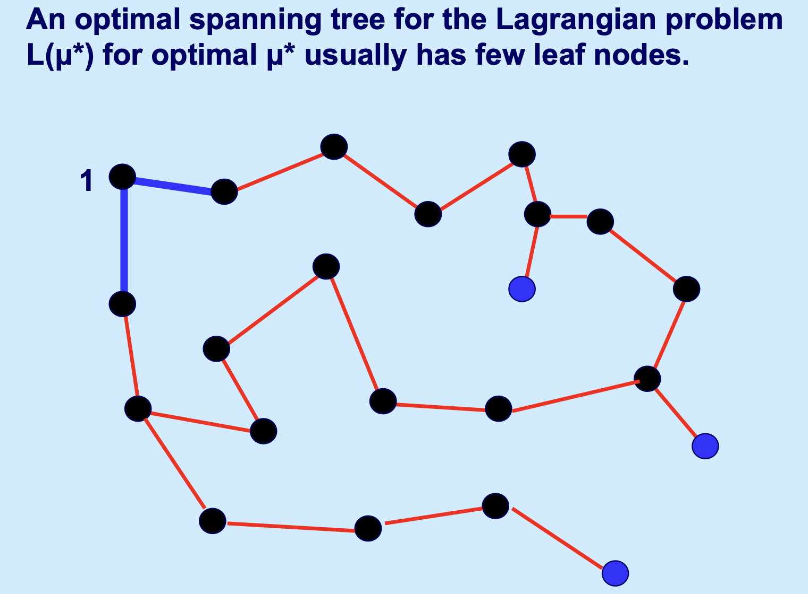

拉格朗日松弛：建模与原理¶
内容大多来自 MIT Network Optimization Course 15-082j，个人觉得这是一个对我的理解很有提升的课程。
介绍¶
拉格朗日松弛作为一种基于 分解（Decomposition） 的优化方法。
- 基本思想与界限原理 (Bounding Principle)
-
当最小化问题由于某些约束过于复杂而难以直接求解时，拉格朗日松弛通过提供一个 下界（Lower Bound） 来衡量解的质量,。
方法是将 复杂约束（Complicating Constraints） 从约束集中删除，并将其作为惩罚项放入目标函数中。
弱对偶性 (Weak Duality)
对于任何拉格朗日乘子 \(\lambda \ge 0\)，松弛问题的最优值 \(L(\lambda)\) 始终小于或等于原始最小化问题的最优值 \(z^*\)。
- 拉格朗日乘子问题 (Lagrangian Multiplier Problem)
- 其目标是寻找最优的乘子 \(\lambda\)，使得下界尽可能地接近原始问题的最优解，即求解 \(L^* = \max \{L(\lambda) : \lambda \ge 0\}\)
- 求解技术 (Solution Techniques)
- 约束生成法 (Constraint Generation)：将可行域表示为极点的凸组合，通过迭代添加路径或极点来精细化边界,,。 次梯度优化 (Subgradient Optimization)：基于非线性编程思想的迭代方法，虽然收敛较慢，但常用于求解乘子问题。
- 与线性规划（LP）及凸包的关系
-
\(L^*\) 等价于在原始可行解集的凸包 (Convex Hull) 上进行优化的结果,。
整数属性 (Integrality Property)：如果松弛后的子问题具有整数属性（即其 LP 松弛的最优解即为整数解），那么拉格朗日松弛得到的下界 \(L^*\) 与该问题的直接 LP 松弛下界 \(z_{LP}\) 是一样的。
案例: Constrained Shortest Paths, CSP¶
我觉得这个案例用来理解拉格朗日松弛/乘子法是非常非常不错的。
- 案例描述：在网络 \(G=(N,A)\) 中，每条弧具有成本 \(c_{ij}\) 和遍历时间 \(t_{ij}\)。目标是找到从节点 1 到 \(n\) 且总时间不超过 \(T\) 的最小成本路径。
- 这是一个 NP-Hard 问题。用数学语言描述即：
Given: a network \(G = (N, A)\)
\(c_{ij}\): cost for arc \((i,j)\)
\(t_{ij}\): traversal time for arc \((i,j)\)
subject to
一个图示为：

我们来试着解决这个问题。
首先，若约束优化问题 \(Y\) 是通过去掉问题 \(X\) 的一个或多个约束条件得到的，则称 \(Y\) 是 \(X\) 的松弛问题。
我们将对这个棘手的约束条件进行松弛处理，然后采用一种启发式策略，对过长的运输时间进行惩罚。随后，我们会将其与拉格朗日松弛法的相关理论建立关联。
我们首先对原问题做个小变换：
s.t.
我们可以注意到这个性质：
\(z^*(\lambda) \leq z^* \quad \forall \lambda \geq 0\)
这是毋庸置疑的，因为约束中保证了目标函数里新增的那一长串是不大于 0 的，所以这个新式子的目标函数一定不比原先的大。
不过大部分教材里会言简意赅地告诉你这叫弱对偶性。很严谨，我也应该这么说的，只不过最开始数学没学好，只能用大俗话写了。
在这个基础上我们继续把那个写到目标函数里的约束给删掉 ... 也就得到了：
s.t.
（注意有一个难约束被我们删掉了）
现在我们又有了新的性质：
这也是显而易见的，因为模型删除掉一个约束之后，其可行解在原基础 \(z^*(\lambda)\)上变多了，也就是新问题的可行域是不删除这个约束时可行域的超集，所以在其他参数不变情况下，对于最小化问题而言，新问题的解一定不差于 \(z^*(\lambda)\)：只会不变或者更小，不会更大。
这个新的性质还告诉我们一个道理：
当给定了参数后，\(L(\lambda)\) 问题的最优解，就是原问题（一个最小化问题）的“下界” （Lower Bound），因为原问题怎么都不可能比这更小了。
现在我们来看看 \(\lambda\) 究竟把这个问题变成啥样了。
你首先可以想到的是，对于问题 \(L(\lambda)\)，如果 \(\lambda\) 为0，这就是一个最短路问题（甚至每条边的参数都没变）；
如果 \(\lambda\) 取不同的值，假设我们不看 T 那一项，实际上这个模型是一个“每条边的权重从 \(c_{ij}\) 变成 \(c_{ij} + \lambda\) 的最短路问题。
我们甚至可以给 \lambda 取不同的值，来看一下解的情况：




我们如果把这种基于参数 \(\lambda\) 的分析做得更细，就能找到随着 \(\lambda\) 变化，最优解的变化，以及，最优解的构成变化，如下：

上面提到过，\(L(\lambda)\) 问题构成了原问题的下界，所以，为了让我们目前拍脑袋找到的解尽可能贴近原问题的解，我们需要让这个下界尽可能地高，要是能直接碰到原问题，就最好了，这也就是经常看到的一些课件里一笔带过说的那个：
The best value of \(\lambda\) is the one that maximizes the lower bound.
知道了这句红字的力量后，我们终于可以引出“拉格朗日乘子问题”（Lagrangian Multipliers Problem）了。
已知拉格朗日松弛模型：
s.t.
则拉格朗日乘子问题为：
\(L^* = \max {L(\lambda ): \lambda \geq 0}\)
没错，这个模型就一行。
这个模型给出后我们又可以得到一个优秀的性质：
这个性质的原因和前面是一样的，我们只不过在众多不同参数下的拉格朗日松弛问题中找到了“最好”的那一个，但这依然不能改变“拉格朗日松弛问题是原问题下界”这个铁律。
现在我们需要再引入一个标记 \(c(P)\)，表示任意一个（符合时间约束的）原问题可行路径 \(P\) 的目标函数值。这里可以补充一句：任意一个可行解都构成了目标函数的一个上界 （Upper bound）。下面要用。
我们把上面的性质写下来：
根据夹逼准则，如果我们碰巧拍脑袋找到了一个可行路径，其成本 \(c(P)\) 等于我们拉格朗日松弛问题的成本，整个式子就可以用等号把上下界拉平了，我们也就找到了拉格朗日乘子问题的最优解。
If \(L(\lambda’) = c(P)\), then \(L(\lambda’) = L* = z* = c(P)\). In this case, \(P\) is an optimal path and \(\lambda’\) optimizes the Lagrangian Multiplier Problem.
一个严谨的数学描述¶
For optimization problem:
with Lagrangian Relaxation formulation:
Corollary. \(\forall \mu, \; L(\mu) \leq z^*.\)
A bound for a minimization problem is better if it is higher.
The problem of finding the best bound is called the Lagrangian multiplier problem.
Lemma: For all vectors \(\mu\), \(L(\mu) \leq L^* \leq z^*\).
Corollary. If \(x\) is feasible for the original problem and if \(L(\mu) = cx\), then \(L(\mu) = L^* = z^* = cx\). In this case \(x\) is optimal for the original problem and \(\mu\) optimizes the Lagrangian multiplier problem.
追问：你的乘子 \(\lambda\) 不够紧！¶
很多时候，我们并不知道一个好的惩罚项 \(\lambda\) 在哪。比如如果一个人拍脑袋把上述约束最短路的 \(\lambda\) 定为 13，会发现差得很远，这就不是一个紧的 \(\lambda\)：

案例: 旅行商问题 TSP¶
- 案例描述：寻找遍历 \(n\) 个城市的最小距离巡回路径。
- 松弛方法：通过使用 "1-tree" 概念进行松弛而将其余节点的度约束松弛到目标函数中。这是由 Held 和 Karp 提出的著名公式。
在旅行商问题（TSP）的求解中，拉格朗日松弛是一种非常经典的分解方法，其核心在于通过引入1-树（1-tree）的概念，将原本复杂的巡回路径问题转化为容易求解的生成树问题,。
以下是利用拉格朗日松弛求解 TSP 的具体步骤和逻辑：
1. 重新定义 TSP 的结构¶
为了应用拉格朗日松弛，首先将 TSP 巡回路径（Tour）的特征拆解为两个部分： * 度数约束：巡回路径中，每个节点必须恰好连接两条弧（度数为 2）。 * 连通性约束：如果去掉与节点 1 相连的两条弧，剩下的弧必须构成一个不包含节点 1 的支撑树（Spanning Tree）。
满足这两个条件的结构被称为 "1-树" (1-tree)。
在 TSP 的数学模型中，确保每个节点度数为 2 是一个“复杂约束”。拉格朗日松弛的处理方式如下： * 保留简单部分：保留“1-树”的结构约束（即节点 1 连接两条边，其余节点构成生成树）。 * 松弛复杂部分：将除了节点 1 以外的其他节点的 度数约束（Degree Constraints） 从约束集中删除，并移动到目标函数中。 * 引入惩罚项（乘子）：为每个节点 \(j\) 分配一个拉格朗日乘子 \(\mu_j\)。如果某个节点的度数不等于 2，则通过 \(\mu_j\) 在目标函数中进行惩罚。
3. 构建拉格朗日松弛问题¶
经过松弛后，目标函数中的弧段成本被修改。对于任意连接节点 \(i\) 和 \(j\) 的弧 \(e=(i,j)\)，其修正成本（Modified Cost）变为：
此时，求解拉格朗日下界 \(L(\mu)\) 的过程就变成了一个简单的优化问题：在修正后的成本下，寻找一个最小代价的 1-树 (Minimum Cost 1-tree)。
这个问题的求解方法变得异常简单，可以先删掉一个结点 1，然后寻找节点 \(2\) 到 \(n\) 的最小生成树（MST），然后再连接节点 1 上成本最小的两条边来快速完成。
4. 求解拉格朗日乘子问题¶
目标是找到最优的乘子 \(\mu^*\)，使得下界 \(L(\mu)\) 最大化，即求解 \(L^* = \max \{L(\mu) : \mu \in \mathbb{R}^n\}\),。 * 直观理解：如果某个节点的度数超过 2（太拥挤），算法会增大该节点的 \(\mu_j\)，使得与之相连的边变贵，从而在下次迭代中降低其度数；反之亦然。 * 结论：由 Held 和 Karp 提出的这一方法证明，最优乘子产生的 \(L(\mu^*)\) 往往非常接近 TSP 的真实最优解，且求得的 1-树 结构通常与真实的巡回路径（Tour）非常接近。
这个解法解下来类似：

5. 另一种更高级的松弛方式（子巡回消除）¶
课件还提到了一种更复杂的松弛方式，即利用子巡回消除约束（Subtour Elimination Constraints）。在这种定义下： * 不仅要求每个节点的度数为 2，还要求对于任何节点的真子集 \(S\)，其内部的边数不能超过 \(|S|-1\)。 * 令人惊讶的是，这种基于子巡回消除的拉格朗日松弛在数学上与上述 Held-Karp 1-树松弛产生的界限是等价的。
总结而言，拉格朗日松弛将 TSP 变成了一个“带权重的生成树”问题，通过不断调整每个节点的“入场费”（乘子），迫使生成的树最终自发地形成一条闭合的巡回路径。
案例：广义分配问题 (Generalized Assignment Problem)¶
广义分配问题（Generalized Assignment Problem, GAP）旨在将一组任务 \(I\) 分配给一组机器 \(J\)，使得总成本最小，同时满足每个任务恰好被分配一次，且每台机器不超过其处理能力的限制。
其中： - \(c_{ij}\)：将任务 \(i\) 分配给机器 \(j\) 的成本 - \(a_{ij}\)：任务 \(i\) 在机器 \(j\) 上消耗的资源量 - \(d_j\)：机器 \(j\) 的总资源容量
方案 1：松弛机器能力约束 (Relaxing Machine Capacity Constraints)¶
松弛对象：将约束 \(\sum_{i \in I} a_{ij} x_{ij} \le d_j\) 移至目标函数。
拉格朗日松弛问题：引入乘子 \(\mu_j \ge 0\)（不等式约束，乘子非负），得到：
重组目标函数：
子问题结构：由于常数项 \(\sum_j \mu_j d_j\) 不影响优化，问题可分解为 \(|I|\) 个独立的子问题，每个任务 \(i\) 独立求解：
这实际上就是对每个任务，从 \(|J|\) 个选项中选择"修正成本"最小的机器——极其简单的枚举问题。
界限质量分析：
为什么满足整数属性？
松弛后的子问题约束矩阵是全幺模矩阵（Totally Unimodular Matrix）。具体地，每个任务必须恰好选择一台机器的约束 \(\sum_{j \in J} x_{ij} = 1\) 形成的约束矩阵，每行每列最多一个 1，这是典型的全幺模结构。
因此，即使将 \(x_{ij} \in \{0,1\}\) 松弛为 \(x_{ij} \geq 0\)，最优解也一定是整数解。
结论：\(L^* = z_{LP}\)，即最佳拉格朗日界等于 LP 松弛界，没有获得更紧的界。
方案 2：松弛任务分配约束 (Relaxing Job Assignment Constraints)¶
松弛对象：将约束 \(\sum_{j \in J} x_{ij} = 1\) 移至目标函数。
拉格朗日松弛问题：引入乘子 \(\lambda_i\)（等式约束，乘子无符号限制），得到：
重组目标函数：
子问题结构：问题可分解为 \(|J|\) 个独立的 0-1 背包问题，每台机器 \(j\) 求解：
其中 \((c_{ij} - \lambda_i)\) 可以理解为任务 \(i\) 的"修正利润"（可正可负）。
界限质量分析：
为什么不满足整数属性？
0-1 背包问题的约束矩阵不是全幺模的。LP 松弛后的最优解通常是分数解（典型地，最多有一个物品被"部分装入"）。
因此，强制 \(x_{ij} \in \{0,1\}\) 会额外"切掉"一些 LP 可行域，拉格朗日对偶提供的界限严格优于 LP 松弛。
结论：\(L^* \geq z_{LP}\)，通常能获得更紧的下界。
两种方案的对比总结¶
| 比较维度 | 方案 1：松弛机器能力 | 方案 2：松弛任务分配 |
|---|---|---|
| 松弛的约束 | \(\sum_i a_{ij} x_{ij} \leq d_j\) | \(\sum_j x_{ij} = 1\) |
| 乘子符号 | \(\mu_j \geq 0\) | \(\lambda_i\) 无限制 |
| 子问题类型 | \(\|I\|\) 个简单选择问题 | \(\|J\|\) 个 0-1 背包问题 |
| 子问题复杂度 | \(O(\|J\|)\) 枚举 | 伪多项式时间动态规划 |
| 满足整数属性？ | ✅ 是 | ❌ 否 |
| 界限质量 | \(L^* = z_{LP}\) | \(L^* \geq z_{LP}\)（通常严格更优） |
拉格朗日松弛的核心洞察和设计原则
选择松弛哪些约束是一门艺术，需要权衡两个因素：
-
子问题的可解性：松弛后的子问题应当是高效可解的（否则失去了分解的意义）
-
界限的紧实度：子问题越"复杂"（即不满足整数属性），通常能获得越紧的界限
经验法则： - 如果松弛后子问题"过于简单"（如纯网络流、指派问题），界限不会优于 LP - 如果松弛后子问题保留了组合结构（如背包、最短路），往往能获得更紧的界限 - 但子问题也不能太难，否则每次迭代的计算代价过高
补充：拉格朗日对偶的理论保证¶
弱对偶与强对偶
设原问题最优值为 \(z^*\)，LP 松弛最优值为 \(z_{LP}\)，拉格朗日对偶最优值为 \(L^* = \max_{\mu \geq 0} L(\mu)\)。
对于任意混合整数规划，恒有： $\(z_{LP} \leq L^* \leq z^*\)$
- 左边的不等式说明：拉格朗日对偶界不会比 LP 松弛界更差
- 当子问题满足整数属性时，等号成立：\(L^* = z_{LP}\)
- 当子问题不满足整数属性时，通常有 \(L^* > z_{LP}\)
案例：带容量的设施选址问题 (Capacitated Facility Location Problem)¶
带容量的设施选址问题（Capacitated Facility Location Problem, CFLP）旨在从候选位置中选择开设哪些设施，并决定如何将客户需求分配给已开设的设施，使得总成本（开设成本 + 服务成本）最小。
符号说明：
| 符号 | 含义 |
|---|---|
| \(I\) | 客户集合 |
| \(J\) | 候选设施集合 |
| \(x_{ij}\) | 客户 \(i\) 的需求由设施 \(j\) 服务的比例 |
| \(y_j\) | 设施 \(j\) 是否开设（0-1 变量） |
| \(c_{ij}\) | 设施 \(j\) 服务客户 \(i\) 的单位成本 |
| \(F_j\) | 开设设施 \(j\) 的固定成本 |
| \(d_i\) | 客户 \(i\) 的需求量 |
| \(K_j\) | 设施 \(j\) 的容量上限 |
模型特点
- \(x_{ij}\) 是连续变量（允许需求拆分），而 \(y_j\) 是二元变量
- 约束 \(\sum_i d_i x_{ij} \leq K_j y_j\) 同时起到两个作用：
- 限制设施容量
- 强制"只有开设的设施才能提供服务"（若 \(y_j = 0\)，则所有 \(x_{ij} = 0\)）
方案 1：松弛需求满足约束（👍）¶
松弛对象：将约束 \(\sum_{j \in J} x_{ij} = 1\) 移至目标函数。
拉格朗日松弛问题：引入乘子 \(\mu_i\)（等式约束，无符号限制），得到：
重组目标函数：
子问题结构：问题可分解为 \(|J|\) 个独立的子问题，每个设施 \(j\) 求解：
子问题的求解方法
每个子问题 \(\text{(Sub}_j\text{)}\) 可以通过枚举 \(y_j\) 的取值来求解：
情况 1：\(y_j = 0\)（不开设设施 \(j\)）
- 此时 \(x_{ij} = 0\) 对所有 \(i\)，子问题目标值 \(= 0\)
情况 2：\(y_j = 1\)（开设设施 \(j\)）
- 子问题变为一个连续背包问题：
- 修正成本 \((c_{ij} - \mu_i) < 0\) 的客户是"有利可图"的，应优先服务
- 求解方法：将客户按"性价比" \(\frac{c_{ij} - \mu_i}{d_i}\) 排序，贪心地装入背包
- 子问题目标值 \(= F_j + \text{(背包最优值)}\)
最终决策：比较两种情况，选择目标值更小的方案。
界限质量分析：
关键观察：子问题不满足整数属性
虽然 \(x_{ij}\) 本身是连续变量，但子问题中 \(y_j \in \{0,1\}\) 的整数约束与容量约束的耦合，使得整体结构不是简单的 LP。
更重要的是，当我们考虑原问题的 LP 松弛（将 \(y_j \in \{0,1\}\) 松弛为 \(0 \leq y_j \leq 1\)）时，约束 \(\sum_i d_i x_{ij} \leq K_j y_j\) 会导致 \(x\) 和 \(y\) 之间的复杂耦合。
通过拉格朗日松弛，我们保留了 \(y_j\) 的整数性，这通常能提供比 LP 松弛更紧的界限。
结论：这种松弛通常能获得高质量的下界，且子问题易于求解。
方案 2：松弛容量关联约束¶
松弛对象：将约束 \(\sum_{i \in I} d_i x_{ij} \leq K_j y_j\) 移至目标函数。
拉格朗日松弛问题：引入乘子 \(\lambda_j \geq 0\)（不等式约束，乘子非负），得到：
重组目标函数：
子问题结构：注意到 \(x\) 和 \(y\) 现在完全解耦：
关于 \(x\) 的子问题（按客户分解）：
这是一个简单的枚举选择问题。
关于 \(y\) 的子问题（按设施分解）：
界限质量分析：
这种松弛可能导致较差的界限
松弛容量约束后：
-
\(x\) 子问题满足整数属性：约束 \(\sum_j x_{ij} = 1\) 配合 \(0 \leq x_{ij} \leq 1\)，最优解自然是整数
-
\(y\) 子问题是平凡的：每个 \(y_j\) 独立决策，没有约束耦合
-
\(x\) 和 \(y\) 的决策完全独立：这意味着可能出现"客户被分配到未开设的设施"的荒谬情况（在松弛问题中是允许的，通过惩罚项处理）
由于子问题结构过于简单，这种松弛得到的界限质量通常不如方案 1。
结论：虽然子问题求解极其简单，但界限质量较差，不推荐作为首选。
两种方案的对比总结¶
| 比较维度 | 方案 1：松弛需求约束 | 方案 2：松弛容量约束 |
|---|---|---|
| 松弛的约束 | \(\sum_j x_{ij} = 1\) | \(\sum_i d_i x_{ij} \leq K_j y_j\) |
| 乘子符号 | \(\mu_i\) 无限制 | \(\lambda_j \geq 0\) |
| 子问题分解方式 | 按设施分解（\(\|J\|\) 个子问题） | \(x\) 按客户分解，\(y\) 按设施分解 |
| 子问题类型 | 连续背包 + 开设决策 | 简单枚举 + 阈值判断 |
| 子问题复杂度 | \(O(\|I\| \log \|I\|)\)（排序） | \(O(\|J\|)\) 枚举 |
| \(x\) 与 \(y\) 的耦合 | ✅ 保留（通过容量约束） | ❌ 完全解耦 |
| 界限质量 | 通常较紧 | 通常较松 |
| 推荐程度 | ⭐⭐⭐ 推荐 | ⭐ 不推荐 |
核心洞察¶
设施选址问题的拉格朗日松弛设计原则
松弛需求约束是更好的选择，原因如下：
-
保留了问题的核心结构：容量约束 \(\sum_i d_i x_{ij} \leq K_j y_j\) 将"开设决策"和"分配决策"紧密关联，这是 CFLP 的本质特征
-
子问题仍具有组合结构：连续背包问题虽然简单，但不是平凡的 LP
-
\(y_j\) 的整数性被保留在子问题中：这是获得紧界限的关键
补充：从 GAP 到 CFLP 的联系¶
与广义分配问题的对比
CFLP 可以看作 GAP 的一个推广：
| 特征 | GAP | CFLP |
|---|---|---|
| 设施/机器开设 | 所有机器都可用 | 需要决定开设哪些设施 |
| 分配变量 | \(x_{ij} \in \{0, 1\}\) | \(0 \leq x_{ij} \leq 1\)（允许拆分） |
| 额外决策 | 无 | \(y_j \in \{0, 1\}\)（开设决策） |
相似的松弛策略： - GAP 中松弛任务分配约束 → 得到背包子问题 → 界限紧 - CFLP 中松弛需求约束 → 得到背包+开设决策子问题 → 界限紧
共同的教训：保留"容量/背包"结构的约束，松弛"覆盖/分配"约束，通常能获得更好的界限。